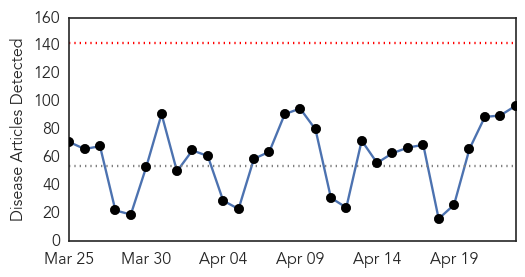
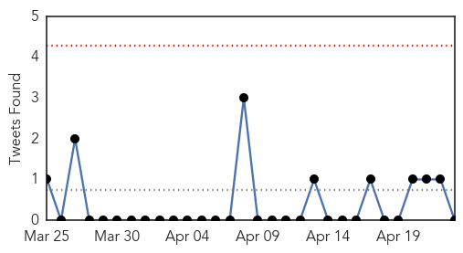
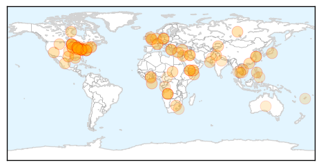
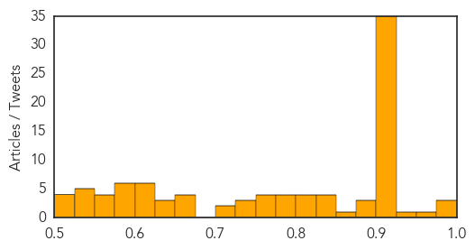
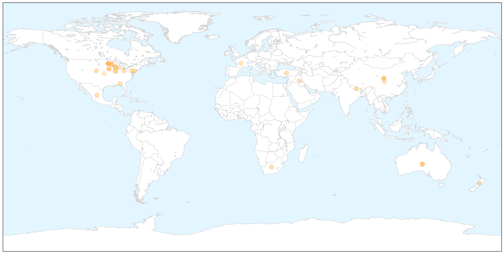
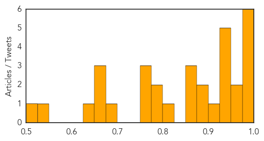

Unknown
30-Day Web Trend
0 alerts, 0 warnings

30-Day Twitter Trend
0 alerts, 0 warnings

Article Locations

Article Confidences
Top Articles:
- 0.992
- Federal scientists working on bird flu vaccines
- 0.987
- Vaccine created in response to spreading of bird flu
- 0.982
- State of emergency declared over bird flu outbreak in MN
- 0.969
- Has Someone Deployed a Flesh Eating Virus against ISIS?
- 0.931
- Dayton declares rare Minn. agriculture emergency for growing avian flu
- 0.918
- USDA/CDC Ramping UP to Control Spread of Avian Flu
- 0.917
- Worried About Dog Flu? Five Tips to Protect Your Pup
- 0.917
- Chicago Tribune
- 0.917
- Chicago Tribune
- 0.917
- Chicago Tribune
- 0.917
- Chicago Tribune
- 0.917
- Chicago Tribune
- 0.917
- Chicago Tribune
- 0.917
- Chicago Tribune
- 0.917
- Chicago Tribune
- 0.917
- Chicago Tribune
- 0.917
- Chicago Tribune
- 0.917
- Chicago Tribune
- 0.917
- Chicago Tribune
- 0.917
- Chicago Tribune
- 0.917
- Chicago Tribune
- 0.917
- Chicago Tribune
- 0.917
- Chicago Tribune
- 0.917
- Chicago Tribune
- 0.917
- Chicago Tribune
- 0.917
- Chicago Tribune
- 0.917
- Chicago Tribune
- 0.917
- Chicago Tribune
- 0.917
- Chicago Tribune
- 0.917
- Chicago Tribune
- 0.917
- Chicago Tribune
- 0.917
- Chicago Tribune
- 0.917
- Chicago Tribune
- 0.917
- Chicago Tribune
- 0.917
- Minnesota governor declares rare ag emergency
- 0.914
- Hantavirus exposure a risk for spring cleaning
- 0.911
- Botulism suspected at Ohio church dinner after woman dies, 23 sickened
- 0.905
- Baer chicken farm near Lake Park, Minn., hit with deadly avian flu
- 0.902
- Botulism Outbreak Caused by Church Potluck Dinner
- 0.900
- 1 dead, 23 sick after botulism outbreak at Ohio church picnic
- 0.898
- Health officials probe cause of suspected botulism at picnic
- 0.895
- Two More Test Positive for HIV in Roka Commune
- 0.885
- USDA vet: infected birds die quickly from H5N2
- 0.874
- Vaccines can help address global DR-TB epidemic: Experts
- 0.832
- World Malaria Day: call to close gaps in prevention and treatment to defeat malaria
- 0.831
- Montana health officials report increase in sexually transmitted - KTVQ.com
- 0.831
- BYM News Espanol
- 0.830
- UI to offer bachelor's degree in public health
- 0.818
- New research points to elderly as growing contributor to tuberculosis in China
- 0.818
- How do you get infected with “Listeria” and what are the risks
Showing top 50 articles...
Top Tweets:
-
No tweets found for Apr 23, 2015
Influenza
30-Day Web Trend
1 alerts, 0 warnings

30-Day Twitter Trend
2 alerts, 0 warnings

Article Locations

X

Article Confidences
Top Articles:
- 0.999
- Medicines start pouring in after Supreme Court order
- 0.998
- Millions of birds being culled in US, Africa and India as different strains infect poultry
- 0.990
- Another NEW JERSEY resident attacked by a COYOTE ~ LYME DISEASE a risk in all PENNSYLVANIA counties ~ Death in COLORADO confirmed as HANTAVIRUS ~ POWASSAN VIRUS alerts in MASSACHUSETTS and PENNSYLVANI
- 0.988
- 4 people most vulnerable to flu complications and why they should vaccinate
- 0.978
- Queensland doctors issue vaccination reminder for children ahead of flu season
- 0.975
- Bird flu takes toll on Central Minnesota turkey farmers
- 0.970
- Delayed flu vaccine hits Murraylands GPs, chemists
- 0.964
- Warm weather, vaccines may be best bet against bird flu
- 0.947
- Minnesota declares state of emergency over bird flu in poultry
- 0.944
- Poultry in Midwest infected with bird flu
- 0.939
- Colorado: Phillips County man died of hantavirus, not flu
- 0.938
- USDA hopes weather will help as H5N2 outbreaks mount
- 0.937
- Alabama poultry producers track avian flu outbreak
- 0.911
- USDA Working On Bird Flu Vaccine Despite Low Risk To Humans
- 0.892
- Canine flu arrives in Ohio
- 0.890
- Factory farms are hotbeds for viruses
- 0.873
- The Archivist Files: How LA handled the 1918 flu pandemic
- 0.871
- Daily Jefferson County Union: News
- 0.867
- With bird flu spreading, USDA starts on potential vaccine
- 0.820
- Why you should get a yearly flu jab
- 0.799
- Michigan ready to respond if bird flu outbreak hits here
- 0.798
- BIRD FLU: State of emergency declared in Minnesota - Story
- 0.770
- Another flock quarantined: Six cases of bird flu in Wisconsin, more than 1 million chickens affected
- 0.751
- April 22, 2015 Archives
- 0.751
- April 22, 2015 Archives
- 0.683
- Bird Flu ‘Catastrophe’ Mounts Amid Concern Virus Is Airborne
- 0.673
- Bird flu shows no signs of abating
- 0.673
- Deadly bird flu continues march across state
- 0.653
- 6th Case of Bird Flu Detected in Wisconsin
- 0.645
- Bird flu 'catastrophe' mounts in US amid concern virus is airborne
- 0.545
- Canine flu hitting dog-related businesses
- 0.502
- the edge of knowledge
Top Tweets:
-
No tweets found for Apr 23, 2015